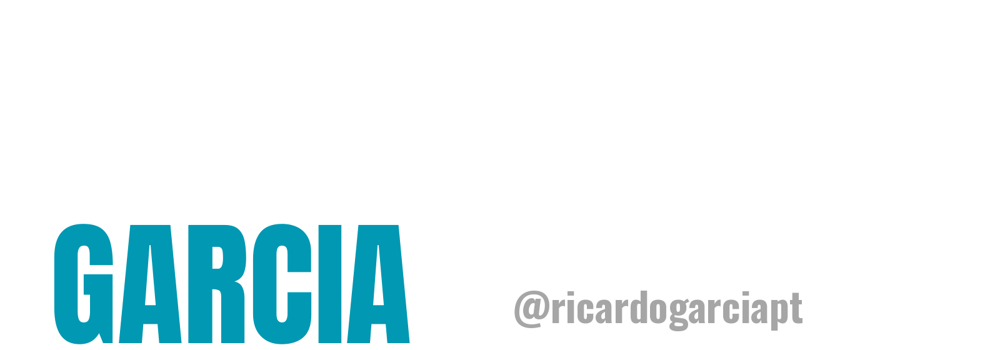
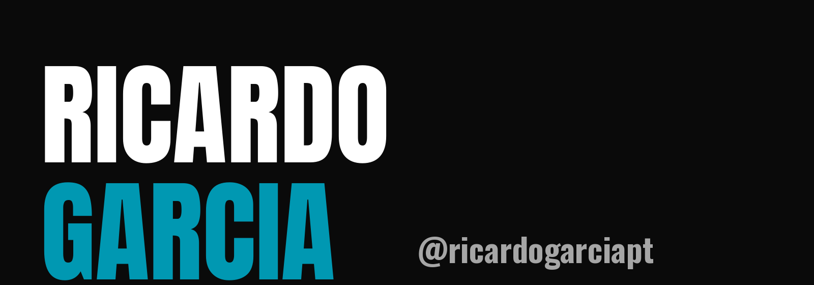
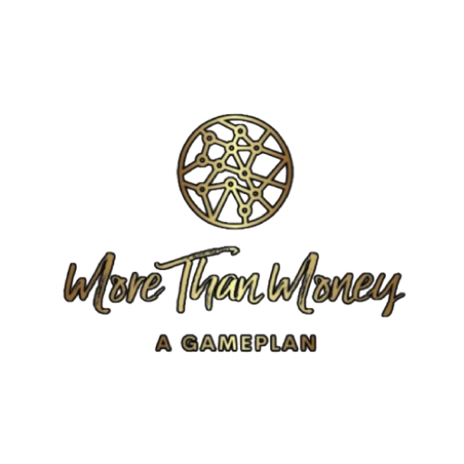

Ricardo
Garcia
@ricardogarciapt · desenvolvimento e trading
Guia de marca pessoal do Ricardo Garcia para vídeos, reels e capas. Fotografia a cores com luz azul (ou a preto e branco), títulos fortes em maiúsculas com uma linha em ciano e outra em branco, sobre carvão.
Cores
#0098B2Ciano principal
#1EAAE6Ciano claro
#1256BEAzul da faixa
#0A0A0ACarvão (fundo)
#040A1AAzul-noite (gradiente)
#FFFFFFBranco (texto)
#A6A6A6Cinza (@ e notas)
#D2A63COuro MTM (destaque)
Tipos de letra
Títulos em Anton
Anton, maiúsculas, itálico. Uma linha em ciano, outra em branco.
Oswald · @ricardogarciapt · legendas e etiquetas
Oswald para o @, legendas e etiquetas.
Kalam: notas escritas à mão
Kalam para pequenas notas manuscritas.
Estilo
- Fotografias e vídeo do Ricardo a cores, com luz e ambiente azul; o preto e branco de contraste alto também serve.
- Pinceladas azuis (#1EAAE6 a #1256BE) por baixo dos títulos, como traço de pincel.
- Nota curta manuscrita em Kalam, a ouro #D2A63C (por exemplo «e a tua, chega?»).
- Logo MoreThanMoney a ouro no fundo, @ricardogarciapt em baixo.
- Título em duas linhas: uma em ciano #0098B2, outra em branco.
- @ricardogarciapt sempre em cinza #A6A6A6, em Oswald.
- Chamada para ação numa faixa azul: Comenta SISTEMA
- Legendas em branco com a palavra-chave em ciano.
- Conteúdo de trading leva sempre a nota: conteúdo educativo, não é aconselhamento financeiro.
Exemplos de capa
Logótipos


Marca associada: MoreThanMoney.